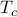
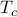
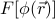
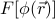
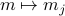
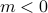
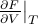
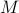

Probe Fields
This page is a bit rambly. The most important part is the box titled ‘‘Plan of Attack’’.
Before we dive into the whole business of free energies and symmetries and order paramters, we need to introduce a neat little trick – a ‘‘fictitious probe field’’ – which lets us calculate the magnetization  easily from a derivative of the free energy. This trick is also useful for other purposes: it lets us define the free energy
easily from a derivative of the free energy. This trick is also useful for other purposes: it lets us define the free energy  as a function of magnetization , which will be enlightening for understanding mean-field-theory. For instance, the function
as a function of magnetization , which will be enlightening for understanding mean-field-theory. For instance, the function  will allow us to visualize how the magnetization spontaneously becomes nonzero once we cool below the critical temperature . Sweet!
will allow us to visualize how the magnetization spontaneously becomes nonzero once we cool below the critical temperature . Sweet!
Here's our plan of attack:
We want to understand the behavior of a system of interacting spins, such as , in the absense of a physical external field.
We'll introduce a fictitious probe field
 , which adds a term into the Hamiltonian.
, which adds a term into the Hamiltonian.This trick lets us formally find the magnetization
 by taking a derivative of the free energy, .
by taking a derivative of the free energy, .In a similar vein, we can find the susceptibility by taking a second derivative of the free energy, .
At the end of the day, since the spins aren't actually feeling a physical field
, we'll need to set the field  .
.
To re-express the free energy (density) in terms of the physical quantity
rather than the non-physical quantity , we take a Legendre transform to .
The free energy , known as the Landau Free Energy, will be our main object of scrutiny on the following page. It yields a wealth of information about how the phase transition behaves! For instance, we can figure out the equilibrium value of just by looking for the minima of .
In later sections, we'll generalize this free energy from  to and then to .
to and then to .
Note that in class, we introduced a different  at each site
at each site  , as well as a separate probe field for each site . Later on, we'll account for a non-uniform ‘‘textures’’ in magnetization by letting things depend on the site . For now, I've decided to keep the indices off the 's and 's, because
, as well as a separate probe field for each site . Later on, we'll account for a non-uniform ‘‘textures’’ in magnetization by letting things depend on the site . For now, I've decided to keep the indices off the 's and 's, because
There's plenty of insight we can learn before we thinking about spatial variation in
.The concepts are a bit cleaner without the
's cluttering things upIt's pretty straightforward to generailze to non-uniform .
As an added bonus, when we take the continuum limit later on (
 ), we'll be used to making these sorts of generalizations.
), we'll be used to making these sorts of generalizations.
Alright, let us begin.
Intro: Why turn off the external field?
So far, when we've discussed the phase transition in the mean-field Ising model, we've set the external field to zero. Throughout this section, we'll continue to keep the external field off (). Here's a symmetry reason.
As you remember, phase transitions involve a special conspiracy. When the system is hot ( ), all its spins pointed in random directions, without any preferred magnetization (
), all its spins pointed in random directions, without any preferred magnetization ( ). As the system becomes colder and coler, all of a sudden, at a special temperature , the spins began to ‘‘conspire’’ together and align in some particular direction ().
). As the system becomes colder and coler, all of a sudden, at a special temperature , the spins began to ‘‘conspire’’ together and align in some particular direction ().
In the ordered phase, the spins somehow have to decide on a particular direction – either or  – even in the absence of the external field. Without an external field (), there's no energetic difference between those states, so there's a symmetry between the and . Once the spins are cooled below , they collectively consspire to break that symmetry by pointing in a particular direction.
In general, this sort of symmetry breaking lies at the heart of the study of phase transitions: above the critical temperature, there is ‘‘no special direction’’ since
is zero and the spins are pointing any which way. But below the critical temperature, since is no longer zero, there's a preferred direction to point, and we say that the symmetry is broken.
There are oher things that break the intrinsic symmetry between spin up and spin down. For instance, an external field would entice an energetic reward for one particular spin direction, distinguish the two spins. However, if our goal is to studay how phase transitions break symmetry, we ought to make sure that nothing else does!
So we keep in the Hamiltonian.
The probe field
Even though we typically care about , it's still remarkably useful to keep the external field term in the Hamiltonian. The reason is that it lets us easily calculate the magnetization density , just by taking a derivative of the free energy.
(TODO Go through the algebra of showing here. It's on worksheet 3.)
At the end of the day, since there isn't actually an external field, we just evaluate the derivatives at . So, for instance, we can calculate the magnetization as .
Keep in mind that the probe field is fake. It's a fictitious mathematical trick. In contrast, the magnetization is a real, physcially tangible quantity – it's average direction that spins are pointing! Experimentally, for instance, you can probe it my neutron scattering. So magnetization is a far better thing to have laying around in your equations than its fictitious conjugate field .
Stepping back
Let's step back and think about what we've done. We've come up with the following procedure for finding :
Introduce a fake field
in the Hamiltonian.Calculate how the free energy
 depends on .
depends on .Take the derivative and then set
to find the magnetization density .
This stuff all works, but there's a little hitch: the free energy function that we calculate has a nasty dependence on the un-physical field . It's kind of gross. It would be much better if we could instead express the free energy in terms of a physically meaningful quantity, such as the magnetization .
So we want to replace with another function that only depends on the physical magnetization .
If only there were a mathematical way to re-express a function in terms of one of its derivatives!
A visit from Monsieur Legendre
Ah yes, the good old Legendre Transform. We've seen it a few times in our classes by now. Whenever we have a function in terms of something yucky, Monsieur Legendre helps us rewrite it in terms of something less yucky.
Today, we're going to use a Legendre Transform to go from the free energy – a yucky quantity that involves the non-physical probe field – into its cousin – a nice quantity that involves the physically observable magnetization! This trick hinges on the fact that the quantities and are conjugate variables .
Let's take trip down memory lane and remind ourselves of what the Legendre Transformation can do for us.
In the next few paragraphs, I'm gonna spend a while to brush up our understanding of Legendre Transformations (and frankly, my own understanding as well). It's not super relevant to our current material…but there's a very good review of some thermodynamics as well in there. So up to you.
Feel free to just skip ahead to the actual course material….
Lagrangians and Hamiltonians

Back in classical mechanics, we learned how the dynamics of a system were described by its Lagrangian  . To figure out how things moved around, we had to solve some second-order differential equations, the Euler-Lagrange equations, given by
. To figure out how things moved around, we had to solve some second-order differential equations, the Euler-Lagrange equations, given by  .
.
Unfortunately, the Lagrangian depends on the velocity , which means that we have to solve a second-order equation to find the trajectories. Also, it's a bit annoying that you can't specify the state of a system by the location of all its particles – you have to specify their velocities as well – ugh! If only there were a way to get rid of the -dependence in the Lagrangian …
Lo and behold, Sir Hamilton comes to the rescue. If we define the Hamiltonian , where the momentum is conjugate to the original variable , all of a sudden, there is no more nasty -dependence left in our function! We have a nice and pristine Hamiltonian , where
the equations of motion are now first-order (since
 doesn't depend on any derivatives).
doesn't depend on any derivatives).the state of the system can be fully specified as a point in phase space. You don't need to add any extra information about velocities or anything like that.
Of course, I don't mean to say that the Hamiltonian always better than the Lagrangian – they're useful for different things, and they give you different physical insights.
Let's see another example of a Legendre Transform.
Internal Energy and Free Energy
Thermodynamics is chock full of Legendre Transforms. In this particular example, we'll transform the internal energy  into the (Helmholtz) free energy , which allows us to express things in terms of the temperature
into the (Helmholtz) free energy , which allows us to express things in terms of the temperature  rather than the entropy
rather than the entropy  . Since temperature is far easier to control than entropy, we often prefer to use the Free Energy to describe the thermodynamic behavior of systems.
. Since temperature is far easier to control than entropy, we often prefer to use the Free Energy to describe the thermodynamic behavior of systems.
You know, the issue with thermodynamics is that it's so goddamn dry and confusing. Most of the time, thermo textbooks just jump right into new topics without telling you why the hell you should care about anything! Maybe one day I'll find a good textbook…
In keeping with this tradition, I'll hop right into the physics without any motivation at all.
Sorry.
The internal energy is a natural function of entropy and volume, . Since the internal energy is a function of two different variables, the expression tells us that we can change the total energy of a system in two different ways:
by adding heat through changing the entropy
, orby performing mechanical work by changing the volume
 .
.
Let's consider what happens when we ‘‘twiddle the knobs’’ to add a little entropy and a little volume . If our deltas are small, we can taylor expand the energy to get
which means that the change in energy can be expressed as
Traditionally, this total differential is written out as

where the temperature and pressure are defined by the derivatives
If you stare closely at these definitions, you'll find something pretty yucky: the pressure is defined as a derivative where the entropy is held constant. Apparently, to find the pressure, you're supposed to measure how the energy changes as you adjust the volume…while keeping the entropy fixed. But how the hell are you supposed to conduct any experiments without changing entropy?
To solve this conundrum, we should define a new sort of energy whose derivative at constant temperature will tell you the pressure…
Legendre transforming from E to F
Again, Monsieur Legendre comes to the rescue. We're going to switch from the energy – whose natural derivatives are taken at constant entropy – to the free energy – whose natural derivatives are taken at constant temperature. In particular, we want to define the free energy so that its volume-derivative at a fixed temperature  is equal to the pressure.
Well, if we want the pressure to equal the derivative with the temperature held constant (rather than the entropy), we're going to have to add a little correction term to the energy, so that . To figure out this correction term, we have to perform a little partial-derivative-sorcery…and as much as I enjoy sorcery, we don't have enough time to go through the derivation, I'm already getting super sidetracked here. Let me just finish up and summarize the point of this Legendre transform.
We define the free energy as . (Agh! Another unmotivated thermodynamic statement!). This definition yields the desired properties that
is a natural function of the temperature and volume, with no more explicit entropy dependence.
The pressure is now defined with the temperature held constant, rather than the entropy.
I wish I could give a more convincing explanation of why the Legendre transform from to yields these desirable properties, but life is short and we have to move on. To compensate, I'll just present the classic physicisty-proof for why the free energy doesn't have any explicit dependence on the entropy.
Let's consider the total differential of the free energy . Remember earlier, when we found the total differential of the internal energy , we had a term involving on the RHS, which meant that the energy depended explicitly on the entropy . Here, we want to show that the free energy  no longer has any explicit entropy-dependence, which we can do by expanding out its total differential and seeing that the term on the RHS cancels out.
no longer has any explicit entropy-dependence, which we can do by expanding out its total differential and seeing that the term on the RHS cancels out.
Well, here we go…
In the first step I plugged in the definition of and in the second step I used the product rule on . Now if we plug in our expression for from a few equations ago, we find that
Miraculously, the  term cancels out, and we're left with
term cancels out, and we're left with
which mean that there's no more explicit entropy dependence (since has disappeared), and that , where the derivative is taken at constant temperature.
So to summarize this whole sidestory about the internal energy and the free energy:
We started off with the internal energy , which depends explicitly on the entropy
.We wanted to get rid of that
-dependence, and replace it with a dependence on the temperature .Notice here that
and are conjugate variables – you get one of them by taking the derivative of the thermo. potential w.r.t. the other: and .
To accomplish this, we performed a Legendre Transform to the free energy
to arrive at a function which no longer explicitly depends on the entropy, but instead depends on its conjugate variable of the temperature.We ‘‘prooved’’ this property comes by expanding out the total differentials of and .
Okay, I've gotten sidetracked enough talking about Legendre Transforms. Hopefully my discussion is a helpful trip down memory lane. Back to the task at hand…
Legendre Transforming the free energy
Let's remember what we want to do here. We started off with the free energy as a function of the fake external field , and we want to instead express it as a function of the physical magnetization .
As advertised, we can accomplish this feat by taking a Legendre Transform to
Hopefully, if you're brushed up enough on your Legendre Transforms, you can convince yourself why this new function is indeed the beast that we're looking for: it no longer depends explicitly on the fictitious field , and it only depends on the magnetization .
Interpreting the Legendre-Transformed Free Energy
There's a particular awesome feature about our new free energy . Namely, the minima of tell us the equilibrium magnetization! This is pretty important, so I'll repeat it again in a box:
In thermal equilibrium, the magnetization takes on a value which minimizes the free energy .
To see why this is the case, let's take the derivative of with respect to . When we plug into the definition, we find
which means that we get the probe field when we take the derivative of wrt !
Notice the nice pattern between the two conjugate variables
and … and ….
However, since was just a cute trick, we have to set it back equal to 0 to answer the question ‘‘what value of would you expect to see in the absence of an external field?’’. And the condition that we end up on is simply  ; in other words, that must be a minimum of .
; in other words, that must be a minimum of .
Technically,
could be a maximum as well, but such solutions will be unstable – just as how a particle balancing on a potential-energy maximum is unstable under the slightest nudge.The theme of ‘‘the equilibrium state minimizes the free energy’’ is a super common refrain in thermodynamics, in chemistry, in biology, and more. It's how chemists think about the driving forces behind reactions, or how biophysicists think about membrane potentials, or how biochemists think about metabolic pathways….so it's not super unusual that we encounter the same theme here
The typical physical rationalization for ‘‘why do we minimize free energy?’’ is as follows: In a perfectly energetically isolated world, the equilibrium state is determined by maximizing entropy. (hence the ‘‘entropy always increases’’ maxim). However, if we look at a smaller subsystem which can exchange energy with the rest of that world, it's no longer energetically isolated, so the entropy is no longer the maximized quantity. Rather, from the subsystem's perspective, it wants to minimize its free energy. Why? It turns out that the state which maximizes the entropy of the world is equivalent to the state which minimizes the free energy of the subsystem. Whoa….
Here's one final remark on another way to think of the new free energy , if you're feeling thermodynamically inclined.
The original free energy has a total differential of
whereas the Legendre-Transformed free energy has a total differential of
(In these expressions here, the first term represents heat, the second term represents mechanical work, and the last term represents magnetic work.) Notice that the last slot of the function has been swapped out between the conjugate pair !
If you stare at these differentials for long enough, you can convince yourself that the relationship between  and is given by

In many respects, this is rather similar to the Legendre Transformations we've seen before; for instance, we know that momentum  and velocity are related by
and velocity are related by
and the temperature and entropy are related by
Man, I've been rambling so much today. I'm sorry if it's confusing to read! This is probably the most incoherent page of all my notes so far…
Well, onwards to Landau Theory.